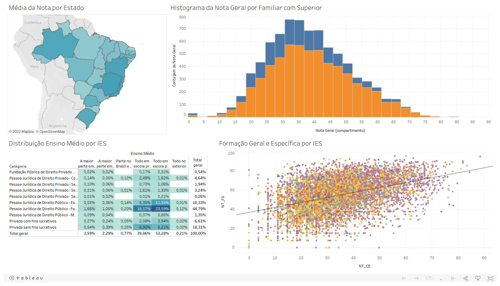

Este dashboard foi desenvolvido como exercício na disciplina de Estatística Econômica e Introdução à Econometria na Universidade Federal do Paraná.
Dashboard: Microdados do Enade 2018 - Somente cursos de Economia
Este dashboard é uma contiação da análise dos microdados do Enade. Desta vez, foi escolhido somente o curso de economia como amostra para análise. O dasboard possui recursos gráficos e interações que permitem selecionar vários recortes desejados, proporcionando insights relevantes para o leitor.
O dashboard foi desenvolvido com Tableau Desktop e está disponível no Tableau Public através deste link.
